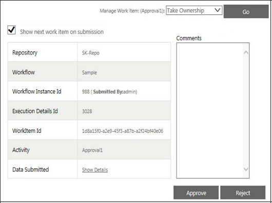

No
The following image shows the Work Item Details for a selected work item in a Work items list. You can view and respond to work items using the Work Item Detail View modal window:
Work Item Details

The Work Item Detail View dialog box displays the following items:
Manage Work Item: The Manage Work item drop-down has options to handle the work item. Select Take Ownership to take ownership of the item. Alternatively, you can select the Hold option to put it on hold. Click Go to submit the response. By setting the AllowAutoownershipOnRowClick property, you can allow users to take ownership on selection of the work item. See Preferences for Work Item Management for more information.
After you take ownership of a work item, you can have the option to view all user responses through the View All Users option. The Work items list property of Hide Response should be set as No to view all users responses. See Manage Work Item - View All Users for more information.
Custom Document View: The Custom Document View is at the left of the detailed view. It displays information on Execution Details.
Work Item Action Controls: The Work Item action controls are located at the right of the detailed view. The controls and the content depend on the activity type. The figure given below displays controls for the Approval work item with a field for comments. The controls and information displayed for an activity also depend on the properties of the activity as set in the process. For example, if the property Hide Responses for a group approval activity is set to False, users will also be presented with a link to view comments from other approvers.